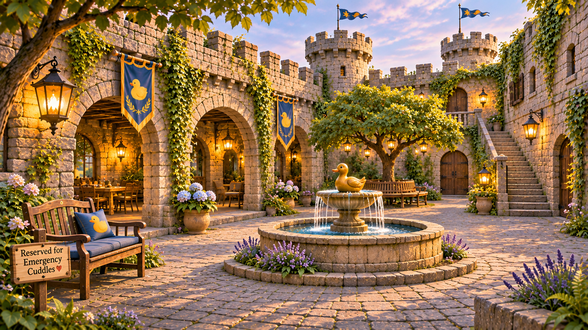

Flowers tumble around the ancient masonry, a duck fountain burbles nearby, and a comfortable bench waits beneath the trees. This is where guests can linger without a form, a badge, or an appointment.
The surrounding gardens soften the fortress's military past. Even the moat has a new patrol: one lone rubber duck, conducting its duties with complete serenity.
Please enjoy the flowers, return borrowed blankets, and refrain from asking the Navy Squeals why the rubber duck has no security clearance.